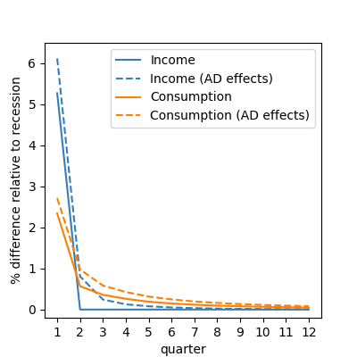
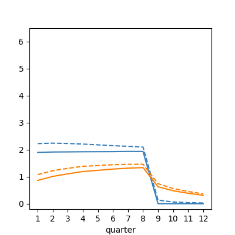
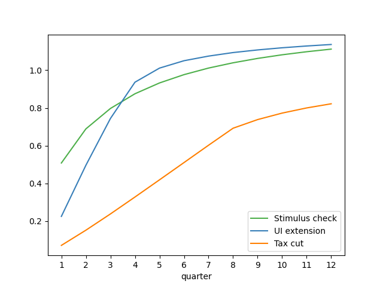

Using a heterogeneous agent model calibrated to match measured spending dynamics over four years following an income shock (Fagereng, Holm, and Natvik (2021)), we assess the effectiveness of three fiscal stimulus policies employed during recent recessions. Unemployment insurance (UI) extensions are the clear “bang for the buck” winner when effectiveness is measured in utility terms. Stimulus checks are second best and have two advantages (over UI): they arrive faster, and they are scalable to any desired size. A temporary (two-year) cut in the rate of wage taxation is considerably less effective than the other policies and has negligible effects in the version of our model without a multiplier.
| html: | https://llorracc.github.io/HAFiscal/ |
| PDF: | HAFiscal.pdf |
| Slides: | https://llorracc.github.io/HAFiscal/HAFiscal-Slides.pdf |
| GitHub: | https://github.com/llorracc/HAFiscal |
1 Carroll: Department of Economics, Johns Hopkins University, ccarroll@jhu.edu, and NBER .
2Crawley: Federal Reserve Board, edmund.s.crawley@frb.gov
3Du: Johns Hopkins University, wdu9@jhu.edu
4Frankovic: Deutsche Bundesbank, ivan.frankovic@bundesbank.de
5Tretvoll: Statistics Norway, Hakon.Tretvoll@ssb.no
The views expressed in this paper are those of the authors and do not necessarily represent those of the Federal Reserve Board, the Deutsche Bundesbank and the Eurosystem, or Statistics Norway. This project has received funding from the European Research Council (ERC) under the European Union’s Horizon 2020 research and innovation programme (grant agreement No. 851891).
Fiscal policies that aim to boost consumer spending in recessions have been tried in many countries in recent decades. The nature of such policies has varied widely, perhaps because traditional macroeconomic models have not provided plausible guidance about which policies are likely to be most effective—either in reducing misery (a ‘welfare metric’) or in increasing output (a ‘GDP metric’).
But a new generation of macro models has shown that when microeconomic heterogeneity across consumer circumstances (wealth; income; education) is taken into account, the consequences of an income shock for consumer spending depend on a measurable object: the intertemporal marginal propensity to consume (IMPC) introduced in Auclert, Rognlie, and Straub (2018). The IMPC extends the notion of marginal propensity to consume (MPC) to account for the speed at which households spend. Fortuitously, new sources of microeconomic data, particularly from Scandinavian national registries, have recently allowed the first reasonably credible measurements of the IMPC (Fagereng, Holm, and Natvik (2021)).
Even in models that can match a given measured IMPC pattern, the relative merits of alternative policies depend profoundly on the both the metric (welfare or GDP) and on the quantitative structure of the rest of the model – for example, whether multipliers exist and how they work. Here, after constructing a microeconomically credible heterogeneous agent (HA) model, we examine its implications for how optimal stimulus policies depend on the existence, nature, and timing of any “multipliers,” which, following Krueger, Mitman, and Perri (2016), we model in a clean and simple way. As a result, the interaction of the multiplier (if any) with the other elements of the model is reasonably easy to understand. In order to ease interpretation of our results, as well as to keep the model tractable, our primary analysis is based on an aggregation of individual consumption responses. This partial equilibrium analysis allows us to introduce elements such as the fact that our multiplier only acts during a recession. However, a general equilibrium approach may introduce transmission channels that we miss in our primary analysis. Accordingly, we also analyze a simple HANK and SAM model that embeds our households’ consumption responses in a general equilibrium framework.1
By “microeconomically credible,” we mean a model that can match three things that we take to be stylized facts: (1) the measured IMPCs from Fagereng, Holm, and Natvik (2021), (2) the cross-sectional distribution of liquid wealth (following Kaplan and Violante (2014)’s definition of liquid wealth) and (3) the spending induced by the unanticipated transitory shock is “front-loaded.” What we mean by this is that a fairly standard HA model (specifically, the model in Carroll, Slacalek, Tokuoka, and White (2017)) can match both the initial distribution of liquid wealth, and the pattern of spending in periods after the shock arrives. But the prediction of that model for spending in the initial period is below the actual spending measured. We call the extra spending that happens immediately in the period of receipt of the stimulus a “splurge.” This splurge behavior is common across households and independent of their liquid wealth holdings. As such, it is consistent with the empirical finding that even households with high liquid wealth have high MPCs in the first quarter.2 The evidence of front-loading from Fagereng, Holm, and Natvik (2021) is consistent with findings elsewhere in the literature.3 This ‘splurge’ model is also consistent with evidence, from Ganong and Noel (2019), that spending drops sharply following the large and predictable drop in income after the exhaustion of unemployment benefits.4
The resulting structural model could be used to evaluate a wide variety of consumption stimulus policies. We examine three that have been implemented in recent recessions in the United States (and elsewhere): an extension of unemployment insurance (UI) benefits, a means-tested stimulus check, and a payroll tax cut.
Our first metric of policy effectiveness is “multiplication bang for the buck”: For a dollar of spending on a particular policy, how much multiplication is induced? Timing matters because in our model (following the empirical literature), the size of any “consumption multiplier” depends on the economic conditions that prevail when the extra spending occurs. Our strategy to illuminate this point is twofold. First, we calculate the policy-induced spending dynamics in an economy with no multiplier (and, therefore, with no multiplication-bang-for-the-buck). We then follow Krueger, Mitman, and Perri (2016)’s approach to modeling the aggregate demand externality. In their approach, output depends mechanically on the level of consumption relative to steady state. But in contrast to Krueger, Mitman, and Perri (2016), the aggregate demand externality in our model is switched on only when the economy is experiencing a recession—there is no multiplication for spending that occurs after our simulated recession is over. A less stark assumption (for example, the degree of multiplication depends on the distance of the economy from its steady state, or the endogenous time-varying multiplication that arises in a New-Keynesian model) would perhaps be more realistic but also much harder to assess clearly.
Because our model’s outcomes reflect the behavior of utility-maximizing consumers, we can calculate another, possibly more interesting, measure of the effectiveness of alternative policies: their effect on consumers’ welfare. Even without multiplication, a utility-based metric can justify countercyclical policy because the larger idiosyncratic shocks to income that occur during a recession may justify a greater-than-normal degree of social insurance. We call this ‘welfare bang for the buck.’
The principal difference between the two metrics is that what matters for the degree of spending multiplication is how much of the policy-induced extra spending occurs during the recession (when the multiplier matters), while effectiveness in the utility metric also depends on who is doing the extra spending (because the recession hits some households much harder than others).
Because high-MPC consumers have high marginal utility, a standard aggregated welfare function would favor redistribution to such consumers even in the absence of a recession. We are interested in the degree of extra motivation for redistributive policies present in a recession, so we construct our social welfare metric specifically to measure only the incremental social welfare effect of alternative policies during recessions (beyond whatever redistributional logic might apply during expansions – see section 4.3).
Households do not prepare for our “MIT shock” recessions, which double the unemployment rate and the average length of unemployment spells. The end of the recession occurs as a Bernoulli process calibrated for an average recession length of six quarters, leading to a return of the unemployment rate to normal levels over time. When the multiplier is active, any reduction in aggregate consumption below its steady-state level directly reduces aggregate productivity and thus labor income. Hence, any policy stimulating consumption will also boost incomes through this aggregate demand multiplier channel.
Our results are intuitive. In the economy with no recession multiplier, the benefit of a sustained payroll tax cut is negligible.5 When a multiplier exists, the tax cut has more benefits, especially if the recession continues long enough that most of the spending induced by the tax cut happens while the economy is still in recession (and the multiplier still is in force). The typical recession, however, ends long before our “sustained” wage tax cut is reversed—and even longer before lower-MPC consumers have spent down most of their extra after-tax income. Accordingly, even in an economy with a multiplier that is powerful during recessions, much of the wage tax cut’s effect on consumption occurs when any multiplier that might have existed in a recession is no longer operative.
Even leaving aside any multiplier effects, the stimulus checks have more value than the wage tax cut, because at least a portion of such checks go to unemployed people who have both high MPCs and high marginal utilities (while wage tax cuts, by definition, go only to persons who are employed and earning wages). The greatest “welfare bang for the buck” comes from the UI insurance extension, because many of the recipients are in circumstances in which they have a much higher marginal utility than they would have had in the absence of the recession, whether or not the multiplier aggregate demand externality exists.
And, in contrast to the wage-tax cut, both the UI extension and the stimulus checks concentrate most of the marginal increment to consumption at times when the multiplier (if it exists) is still powerful. A disadvantage of the UI extension, in terms of “multiplied bang for the buck,” is that (relative to the assumed-to-be-immediate-upon-recession checks) it takes somewhat more time until the transfers reach the beneficiaries. Countering this disadvantage is the fact that the MPC of UI recipients is higher than that of stimulus check recipients, and, furthermore, the insurance nature of the UI payments reduces the precautionary saving motive. In the end, our model says that these two forces roughly balance each other, so that the “multiplied bang for the buck” of the two policies is similar. In the welfare metric, however, there is considerable marginal value to UI recipients even if they receive some of the benefits after the recession is over (and no multiplier exists). Hence, in the welfare metric, the relative value of UI benefits is increased compared with the policy of sending stimulus checks.
We conclude that extended UI benefits should be the first weapon employed from this arsenal, as they have a greater welfare benefit than stimulus checks and a similar “multiplied bang for the buck.” But a disadvantage is that the total amount of stimulus that can be accomplished with the UI extension is constrained by the fact that only a limited number of people become unemployed. If more stimulation is called for than can be accomplished via the UI extension, checks have the advantage that their effects scale almost linearly in the size of the stimulus—see Beraja and Zorzi (2023) for a more detailed exposition of the relation between MPC and stimulus size. The wage tax cut is also, in principle, scalable, but its effects are smaller than those of checks because recipients have lower MPCs and marginal utility than check and UI recipients. In the real world, a tax cut is also likely the least flexible of the three tools: UI benefits can be further extended, and multiple rounds of checks can be sent, but multiple rounds of changes in payroll tax rates would likely be administratively and politically more difficult.
One theme of our paper is that which policies are better or worse, and by how much, depends on both the quantitative details of the policies and the quantitative modeling of the economy.
But the tools we are using could be reasonably easily modified to evaluate a number of other policies. For example, in the COVID-19 recession in the US, not only was the duration of UI benefits extended, but those benefits were also supplemented by substantial extra payments to every UI recipient. We did not calibrate the model to match this particular policy, but the framework could accommodate such an analysis.
Several papers have looked at fiscal policies that have been implemented in the U.S. under the lens of a structural model. Coenen, Erceg, Freedman, Furceri, Kumhof, Lalonde, Laxton, Lindé, Mourougane, Muir, et al. (2012) analyses the effects of different fiscal policies using seven different models. The models are variants of two-agent heterogeneous agent models and make no attempt to match the full distribution of liquid wealth as we do in this paper. We also attempt to match the microdata on household consumption behavior, much of which has come more recently. More closely aligned to the methodology of our paper are McKay and Reis (2016), McKay and Reis (2021), and Phan (2024) which look at the role of automatic stabilizers. By contrast, we consider discretionary policies that have been invoked after a recession has begun. Another related paper is Bayer, Born, Luetticke, and Müller (2023) who studies fiscal policies implemented during the pandemic. They find that targeted stimulus through an increase in unemployment benefits has a much larger multiplier than an untargeted policy. In contrast, we find that untargeted stimulus checks have slightly higher multiplier effects when compared with a targeted policy extending eligibility for unemployment insurance. Our results derive from the fact that—as in the data—even high liquid wealth consumers have relatively high MPCs in our model.
This paper is also closely related to the empirical literature that aims to estimate the effect of transitory income shocks and stimulus payments. We particularly focus on Fagereng, Holm, and Natvik (2021), who use Norwegian administrative panel data with sizable lottery wins to estimate the MPC out of transitory income in that year, as well as the pattern of expenditure in the following years. We build a model that is consistent with the patterns they identify. Examples of the literature that followed the Great Recession in 2008 are Parker, Souleles, Johnson, and McClelland (2013) and Broda and Parker (2014). These papers exploit the effectively random timing of the distribution of stimulus payments and identify a substantial consumption response. The results indicate an MPC that is difficult to reconcile with representative agent models.
Thus, the paper relates to the literature presenting HA models that aim to be consistent with the evidence from the micro-data. An example is Kaplan and Violante (2014), who build a model where agents save in both liquid and illiquid assets. The model yields a substantial consumption response to a stimulus payment, since MPCs are high both for constrained, low-wealth households and for households with substantial net worth that is mainly invested in the illiquid asset (the “wealthy hand-to-mouth”). Carroll, Crawley, Slacalek, and White (2020) present an HA model that is similar in many respects to the one we study. Their focus is on predicting the consumption response to the 2020 U.S. CARES Act that contains both an extension of unemployment benefits and a stimulus check. However, neither of these papers attempts to evaluate and rank the effectiveness of different stimulus policies, as we do.
Kaplan and Violante (2022) discuss different mechanisms used in HA models to obtain a high MPC and the tension between that and fitting the distribution of aggregate wealth. We use one of the mechanisms they consider, ex-ante heterogeneity in discount factors, and build a model that delivers both high average MPCs and a distribution of liquid wealth consistent with the data. The model allows for splurge consumption and thus also delivers substantial MPCs for high-liquid-wealth households. This helps the model match not only the initial MPC, but also the propensity to spend out of a windfall for several periods after it is obtained.
In our model, consumers do not adjust their labor supply in response to the stimulus policies. Our assumption is broadly consistent with the empirical findings in Ganong, Greig, Noel, Sullivan, and Vavra (2022) and Chodorow-Reich and Karabarbounis (2016). However, the literature is conflicted on this subject and Hagedorn, Manovskii, and Mitman (2017) and Hagedorn, Karahan, Manovskii, and Mitman (2019) find that extensions of unemployment insurance affec both search decisions and vacancy creation leading to a rise in unemployment. Kekre (2022), on the other hand, evaluates the effect of extending unemployment insurance in the period from 2008 to 2014. He finds that this extension raised aggregate demand and implied a lower unemployment rate than without the policy. However, he does not attempt to compare the stimulus effects of extending unemployment insurance with other policies.
One criterion to rank policies is the extent to which spending is “multiplied,” and our paper therefore relates to the vast literature discussing the size and timing of any multiplier. Our focus is on policies implemented in the aftermath of the Great Recession, a period when monetary policy was essentially fixed at the zero lower bound (ZLB). We therefore do not consider monetary policy responses to the policies we evaluate in our primary analysis, and our work thus relates to papers such as Christiano, Eichenbaum, and Rebelo (2011) and Eggertsson (2011), who argue that fiscal multipliers are higher in such circumstances. Hagedorn, Manovskii, and Mitman (2019) present an HA model with both incomplete markets and nominal rigidities to evaluate the size of the fiscal multiplier and also find that it is higher when monetary policy is constrained. Unlike us, they focus on government spending instead of transfers and are interested in different options for financing that spending. Broer, Krusell, and Öberg (2023) also focus on fiscal multipliers for government spending and show how they differ in representative agent and HA models with different sources of nominal rigidities. Ramey and Zubairy (2018) investigate empirically whether there is support for the model-based results that fiscal multipliers are higher in certain states. While they find evidence that multipliers are higher when there is slack in the economy or the ZLB binds, the multipliers they find are still below one in most specifications. In any case, we condition on policies being implemented in a recession—when, this literature argues, multipliers are higher—but it is not crucial for our purposes whether the multipliers are greater than one or not. We are concerned with relative multipliers, and the multiplier is only one of the two criteria we use to rank policies.
The second criterion to rank policies is our measure of welfare. Thus, the paper relates to the recent literature on welfare comparisons in HA models. Both Bhandari, Evans, Golosov, and Sargent (2021) and Dávila and Schaab (2022) introduce ways of decomposing welfare effects. In the former case, these are aggregate efficiency, redistribution and insurance, while the latter further decomposes the insurance part into intra- and intertemporal components. These papers are related to ours, but we do not decompose the welfare effects. Regardless of decomposition, we want to (1) use a welfare measure as an additional way of ranking policies and (2) introduce a measure that abstracts from any incentive for a planner to redistribute in the steady state (or “normal” times).
Consumers differ by their level of education and, within education group, by subjective discount factors (calibrated to match the within-group distribution of liquid wealth). We first describe each kind of consumer’s problem, given an income process with permanent and transitory shocks calibrated to their type, as well as type-specific shocks to employment. The next step describes the arrival of a recession and the policies we study as potential fiscal policy responses. The last section discusses an extension incorporating aggregate demand effects that induce feedback from aggregate consumption to income and (via the marginal propensity to consume) back to consumption, amplifying the effect of a recession when it occurs.
A consumer i has education e(i) and a subjective discount factor βi. The consumer faces a stochastic income stream, yi,t, and chooses to consume a fraction of that income when it arrives—the ‘splurge’, described in the introduction. With what is left over, the consumer chooses to optimize consumption without regard to the fraction that was already spent. Therefore, consumption each period for consumer i can be written as
where ci,t is total consumption, csp,i,t is the splurge consumption, and copt,i,t is the consumer’s optimal choice of consumption after splurging. Splurge consumption is simply a fraction of income:
while the optimized portion of consumption is chosen to maximize the perpetual-youth lifetime expected-utility-maximizing consumption, where D is the end-of-life probability:
We use a standard CRRA (constant relative risk aversion) utility function, so u(c) = c1−γ∕(1 − γ) for γ≠1 and u(c) = log(c) for γ = 1, where γ is the coefficient of relative risk aversion. The optimization is subject to the budget constraint, given existing market resources mi,t and income state, and a no-borrowing constraint:
where R is the gross interest factor for accumulated assets ai,t.
Consumers face a stochastic income process with permanent and transitory shocks to income, along with unemployment shocks. In normal times, consumers who become unemployed receive unemployment benefits for two quarters. Permanent income evolves according to:
where ψi,t+1 is the shock to permanent income and Γe(i) is the average growth rate of income for the consumer’s education group e(i).6 The realized growth rate of permanent income for consumer i is thus i,t+1 = ψi,t+1Γe(i). The shock to permanent income is normally distributed with variance σψ2.
The actual income a consumer receives will be subject to the individual’s employment status as well as transitory shocks, ξi,t:
where ξi,t is normally distributed with variance σξ2, and ρ b and ρnb are the replacement rates for an unemployed consumer who is or is not eligible for unemployment benefits, respectively.
A Markov transition matrix Π generates the unemployment dynamics where the number of states is given by 2 plus the number of periods that unemployment benefits last. An employed consumer can continue being employed or move to being unemployed with benefits.7 The first row of Π is thus given by [1 −πeue(i),π eue(i),0], where π eue(i) indicates the probability of becoming unemployed from an employed state and 0 is a vector of zeros of the appropriate length. Note that we allow this probability to depend on the education group of consumer i and will calibrate this parameter to match the average unemployment rate for each education group. Upon becoming unemployed, all consumers face a probability πue of transitioning back into employment and a probability 1 − πue of remaining unemployed with one less period of remaining benefits. After transitioning into the unemployment state where the consumer is no longer eligible for benefits, the consumer will remain in this state until becoming employed again. The probability of becoming employed is thus the same for each of the unemployment states and education groups.
We model the arrival of a recession, and the government policy response to it, as an unpredictable event—an MIT shock. We have four types of shocks: one representing a recession and one for each of the three different policy responses we consider. The policy responses are usually modeled as in addition to the recession, but we also consider a counterfactual in which the policy response occurs without a recession in order to understand the welfare effects of the policy.
Recession. At the onset of a recession, several changes occur. First, the unemployment rate for each education group doubles: Those who would have been unemployed in the absence of a recession are still unemployed, and an additional number of consumers move from employment to unemployment. Second, conditional on the recession continuing, the employment transition matrix is adjusted so that unemployment remains at the new high level and the expected length of time for an unemployment spell increases. In our baseline calibration, discussed in detail in section 3.3.1, we set the expected length of an unemployment spell to one and a half quarters in normal times, and this length increases to four quarters in a recession. Third, the end of the recession occurs as a Bernoulli process calibrated for an average length of recession of six quarters. Finally, at the end of a recession, the employment transition matrix switches back to its original probabilities, and, as a result, the unemployment rate trends down over time, back to its steady-state level.
Policies. The policies we consider in response to a recession are inspired by the Economic Stimulus Act of 2008 and the Tax Relief, Unemployment Insurance Reauthorization, and Job Creation Act of 2010. The former included means tested stimulus checks in the form of tax rebates, and the latter included both an extension of unemployment benefits and a tax cut. Based on these examples we therefore consider the following stimulus policies in our framework:
1. Stimulus check. In this policy response, the government sends money to every consumer that directly increases the household’s market resources. The checks are means-tested depending on permanent income. A check for $1,200 is sent to every household with permanent income less than $100,000, and this amount is then linearly reduced to zero for households with a permanent income greater than $150,000. Similar policies were implemented in the U.S. in 2001, 2008, and during the pandemic.
2. Extended unemployment benefits. In this policy response, unemployment benefits are extended from two quarters to four quarters. That is, those who become unemployed at the start of the recession, or who were already unemployed, will receive unemployment benefits for up to four quarters (including quarters leading up to the recession). Those who become unemployed one quarter into the recession will receive up to three quarters of unemployment benefits. These extended unemployment benefits will occur regardless of whether the recession ends, and no further extensions are granted if the recession continues. This policy reflects temporary changes made to unemployment benefits in the U.S. following the great recession.
3. Payroll tax cut. In this policy response, employee-side payroll taxes are reduced for a period of eight quarters.8 During this period, which continues irrespective of whether the recession continues or ends, employed consumers’ income is increased by 2 percent. The income of the unemployed is unchanged by this policy. Households also believe there is a 50-50 chance that the tax cut will be extended by another two years if the recession has not ended when the first tax cut expires.9 The payroll tax cut introduced in the U.S. in 2010 was itself an extension of previously implemented cuts and had a two-year horizon.
Financing the policies. Some work in the HA macro literature has shown that if taxes are raised immediately to offset any fiscal stimulus, results can be very different than they would be if, as occurs in reality, recessionary policies are debt financed. However, typical fiscal rules assume that any increase in debt gets financed over a long interval. Accordingly, almost all of the effects of any particular fiscal rule will be similar for each of our policies so long as the great majority of the debt is repaid after the short recessionary period that is our main focus.
To keep our analysis as simple as possible, we do not model the debt repayment. Any of a variety of fiscal rules could be imposed for the period following our short period of interest, but we did not want to choose any particular fiscal rule in order to avoid making a choice that has little consequence for our key question. Advocates of alternative fiscal rules likely already have intuitions about how such rules’ economic consequences differ, but those consequences—under our partial equilibrium analysis—will be similar for all three policies we consider. Alternative choices of fiscal rules will therefore not affect the ranking of policies that is our principal concern.10
Our baseline model is a partial equilibrium model that does not include any feedback from aggregate consumption to income. In an extension to the model, we add aggregate demand effects during the recession. The motivation for this specification comes from the idea that spending in an economy with substantial slack and in which the central bank is unable to prevent a recession will result in higher utilization rates and greater output. By contrast, government spending in an economy running at potential with an active monetary policy will not succeed in increasing output. The recent inflation experience of the U.S. provides some evidence that output responds highly non-linearly to aggregate demand. This idea is explored in a recent revival of research into non-linear Phillips curves, such as Benigno and Eggertsson (2023) and Blanco, Boar, Jones, and Midrigan (2024).
With this extension, any changes in consumption away from the steady-state consumption level feed back into labor income. Aggregate demand effects are evaluated as
where is the level of consumption in the steady state. Idiosyncratic income in the aggregate demand extension is multiplied by AD(Ct):
The series yAD,i,t is then used for each consumer’s budget constraint.
This section describes how we set the model’s parameters. First, we estimate the extent to which consumers ‘splurge’ when receiving an income shock. Given the lack of empirical evidence of the marginal propensity to consume over time for the US, we use instead Norwegian data to estimate the splurge. Specifically, we calibrate our model to the Norwegian economy and match evidence from Norway on the profile of the marginal propensity to spend over time and across different wealth levels, as provided by Fagereng, Holm, and Natvik (2021).11
Second, we set up the full model on U.S. data, taking the splurge factor as given from the Norwegian estimation In the full model, agents differ according to their level of education and their subjective discount factors. A subset of the parameters in the model are calibrated equally for all types, and some parameters are calibrated to be specific to each education group. Finally, a distribution of subjective discount factors is estimated separately for each education group to match features of each within-group liquid wealth distribution.
The splurge allows us to capture the shorter- and longer-term response of consumption to income shocks, especially for consumers with significant liquid wealth. The main aim of this paper, however, is to rank consumption stimulus policies, not to provide a microfoundation for the splurging behavior. We view the splurge factor as a model device that enables us to rank the policies in a model that is consistent with the best available micro-evidence of spending patterns over time after a transitory income shock. In appendix A we provide results from our model without a splurge factor. There we show that such a model provides a worse fit to the moments in the data that we are interested in, but not dramatically so, and that our conclusions regarding the ranking of the policies are not affected.
The specific exercise we carry out in this section, is to show that our model can account well for the results of Fagereng, Holm, and Natvik (2021), who study the effect of lottery winnings in Norway on consumption using millions of records from the Norwegian population registry. We calibrate our model to reflect the Norwegian economy and, using their results, estimate the splurge factor, as well as the distribution of discount factors in the population, to match two empirical moments.
First, we take from Fagereng, Holm, and Natvik (2021) the marginal propensity to consume out of a one-period income shock. We target not only the initial (aggregate) response of consumption to the income shock, but also the subsequent effect on consumption in years one through four after the shock. We also target the initial consumption response in the cross-section, i.e. across the quartiles of the liquid wealth distribution, for which empirical estimates are also provided. The shares of lottery winnings expended at different time horizons, as found in Fagereng, Holm, and Natvik (2021), are plotted in figure 9a. Table 1 (second row) shows the initial consumption response across liquid wealth quartiles.
Second, we match the steady-state distribution of liquid wealth in the model to its empirical counterpart. Because of the lack of data on the liquid wealth distribution in Norway, we use the corresponding data from the United States, assuming that liquid wealth inequality is comparable across these countries.12 Specifically, we impose as targets the cumulative liquid wealth shares for the entire population at the 20th, 40th, 60th, and 80th income percentiles, which, in data from the Survey of Consumer Finances (SCF) in 2004 (see section 3.2 for further details), equal 0.03 percent, 0.35 percent, 1.84 percent, and 7.42 percent, respectively. Hence, 92.6 percent of the total liquid wealth is held by the top income quintile. We also target the mean liquid wealth to income ratio of 6.60. The data are plotted in figure 9b.
Panel (a) shows the fit of the model to the dynamic consumption response estimated in
Fagereng, Holm, and Natvik (2021); see their figure A5. Panel (b) shows the fit of the model
to the distribution of liquid wealth (see Section 3.2 for the definition) from the 2004 SCF.
For this estimation exercise, the remaining model parameters are calibrated to reflect the
Norwegian economy. Specifically, we set the real interest rate to 2 percent annually and the
unemployment rate to 4.4 percent, in line with Aursland, Frankovic, Kanik, and
Saxegaard (2020). The quarterly probability to survive is calibrated to 1 − 1∕160, reflecting an
expected working life of 40 years. Aggregate productivity growth is set to 1 percent annually,
following Kravik and Mimir (2019). The unemployment net replacement rate is
calibrated to 60 percent, following OECD (2020). Finally, we set the real interest rate
on liquid debt to 13.6 percent, following data from the Norwegian debt registry
Gjeldsregistret (2022).13
Estimates of the standard deviations of the permanent and transitory shocks are
taken from Crawley, Holm, and Tretvoll (2022), who estimate an income process
on administrative data for Norwegian males from 1971 to 2014. The estimated
annual variances for the permanent and transitory shocks are 0.004 and 0.033,
respectively.14
As in Carroll, Crawley, Slacalek, Tokuoka, and White (2020), these are converted to quarterly
values by multiplying the permanent and transitory shock variances by 1∕4 and 4,
respectively. Thus, we obtain quarterly standard deviations of σψ = 0.0316 and
σξ = 0.363.
Using the calibrated model, we simulated unexpected lottery winnings and calculate the
share of the lottery spent in each year. Specifically, each simulated agent receives a lottery win
in a random quarter of the first year of the simulation. The size of the lottery win is
itself random and spans the range of lottery sizes found in Fagereng, Holm, and
Natvik (2021). The estimation procedure minimizes the distance between the target and
model moments by selecting the splurge factor and the distribution of discount
factors in the population, where the latter are assumed to be uniformly distributed in
the range [β −∇,β + ∇]. We approximate the uniform distribution of discount
factors with a discrete approximation and let the population consist of eight different
types.
The estimation yields a splurge factor of 0.249 and a distribution of discount factors
described by β = 0.968 and ∇ = 0.0578. Given these estimated parameters and the remaining
calibrated ones, the model is able to replicate the time path of consumption in response to a
lottery win from Fagereng, Holm, and Natvik (2021) and the targeted distribution of liquid
wealth very well, see Figure 1. Also, the targeted moments discussed in Table 1 are captured
relatively well. In particular, the model is able to account for the empirical fact that
MPC consume for high-wealth agents is substantially larger than zero, see the first
column.
Before we move on to the parameterization of the full model, we describe in detail the data
that we use to get measures of permanent income, liquid wealth, and the division of
households into educational groups in the United States. We use data on the distribution of
liquid wealth from the 2004 wave of the SCF. We restrict our attention to households where
the head is of working age, which we define to be in the range from 25 to 62. The SCF-variable
“normal annual income” is our measure of the household’s permanent income, and, to exclude
outliers, we drop the observations that make up the bottom 5 percent of the distribution of
this variable. The smallest value of permanent income for households in our sample is thus
$16,708.
Liquid wealth is defined as in Kaplan and Violante (2014) and consists of cash, money
market, checking, savings, and call accounts; directly held mutual funds; and stocks and
bonds. We subtract off liquid debt, which is the revolving debt on credit card balances. Note
that the SCF does not contain information on cash holdings, so these are imputed with the
procedure described in Appendix B.1 of Kaplan and Violante (2014), which also describes the
credit card balances that are considered part of liquid debt. We drop any households that have
negative liquid wealth.
Households are classified into three educational groups. The first group, “Dropout,”
applies to households where the head of household has not obtained a high school
diploma; the second group, “Highschool,” includes heads of households who have a high
school diploma and those who, in addition, have some years of college education
without obtaining a bachelor’s degree; and the third group, “College,” consists of
heads of households who have obtained a bachelor’s degree or higher. With this
classification of the education groups, the Dropout group makes up 9.3 percent
of the population, the Highschool group 52.7 percent, and the College group 38.0
percent.
With our sample selection criteria, we are left with a sample representing about 61.3 million
U.S. households.
With households classified into the three education groups using the SCF data, we proceed to
set the parameters of the model as follows. First, we calibrate a set of parameters that apply
to all types of houesholds in the model. Second, we calibrate another set of parameters that
are specific to each education group to capture broad differences across these groups. Finally,
given the calibrated parameters we estimate discount factor distributions for each
education group that allow us to match the distribution of liquid wealth in each
group.
The model is a simplified model for households in that we do not take into account
heterogeneity across household size or composition. The households are ex-ante
heterogeneous in their subjective discount factors as well as their level of education. We
classify the education level of the household based on the education of the head of the
household, and we typically think of individual characteristics as applying to that
person.
A period in the model is one quarter. This choice makes it realistic to consider stimulus
policies that are implemented in the same period as a recession starts.
Panel A of table 2, lists parameters that are calibrated equally across all types in the model.
Panel B of table 2, lists parameters in the model that are education specific. For
completeness, panel C of table 2 summarizes the parameters describing how we
model a recession and the three policies we consider as potential responses to a
recession.
Preferences, survival and interest rates. All households are assumed to have a
coefficient of relative risk aversion equal to γ = 2. We also assume that all households have the
same propensity to splurge out of transitory income gains and set ς = 0.249, the value
estimated in section 3.1. However, each education group is divided into types that differ in
their subjective discount factors. The distributions of discount factors for each education
group are estimated to fit the distribution of liquid wealth within that group, and this
estimation is described in detail in section 3.3.2. Regardless of type, households face a
constant survival probability each quarter. This probability is set to 1 − 1∕160, reflecting an
expected working life of 40 years. The real interest rate on households’ savings is set to 1
percent per quarter.
Labor market risk while employed. When consumers are born, they receive an initial
level of permanent income. This initial value is drawn from a log-normal distribution that
depends on the education level the household is born with. For each education group, the
parameters of the distribution are determined by the mean and standard deviation of
log-permanent income for households in that group where the head of the household is of age
25 in the SCF 2004. For the Dropout group, the mean initial value of quarterly permanent
income is $6,200; for the Highschool group, it is $11,100; and for the College group, it is
$14,500. The standard deviations of the log-normal distributions for each group are,
respectively, 0.32, 0.42, and 0.53.
While households remain employed, their income is subject to both permanent and
transitory idiosyncratic shocks. These shocks are distributed equally for the three education
groups. The standard deviations of these shocks are taken from Carroll, Crawley, Slacalek,
Tokuoka, and White (2020), who set the standard deviations of the transitory and permanent
shocks to σξ = 0.346 and σψ = 0.0548, respectively.
Permanent income also grows, on average, with a growth rate Γe(i) that depends on the level
of education. These average growth rates are based on numbers from Carroll, Crawley,
Slacalek, and White (2020), who construct age-dependent expected permanent income growth
factors using numbers from Cagetti (2003) and fit the age-dependent numbers to their
life-cycle model. We construct the quarterly growth rates of permanent income in our
perpetual-youth model by taking the average of the age-dependent growth rates
during a household’s working life. The average gross quarterly growth rates that
we obtain for the three education groups are then Γd = 1.0036, Γh = 1.0045, and
Γc = 1.0049.
Unemployment. Consumers also face the risk of becoming unemployed and will then have
access to unemployment benefits for a certain period. The parameters describing the
unemployment benefits in normal times are based on the work of Rothstein and
Valletta (2017), who study the effects on household income of unemployment and of running
out of eligibility for benefits. The unemployment benefits replacement rate is thus set to
ρb = 0.7 for all households, and when benefits run out, the unemployment replacement
rate without any benefits is set to ρnb = 0.5. These replacement rates are set as a
share of the households’ permanent income and are based on the initial drop in
income upon entering an unemployment spell, presented in figure 3 in Rothstein and
Valletta (2017).15
The duration of unemployment benefits in normal times is set to two quarters, so that our
Markov transition matrix Π has four states. This length of time corresponds to the mean
duration of unemployment benefits across U.S. states from 2004 to mid-2008 of 26 weeks,
reported by Rothstein and Valletta (2017).
The probability of transitioning out of unemployment is set to match the average duration
of an unemployment spell in normal times. In data from the Bureau of Labor Statistics, this
average duration was 19.6 weeks or 1.5 quarters in 2004. We do not have data on
education-specific duration rates, however, so we set the average duration of unemployment to
1.5 quarters for all households. This implies that the transition probability from
unemployment to employment is set to πue = 2∕3.
The Bureau of Labor Statistics provide data on unemployment rates for different education
groups, and we match the average rate in each group in 2004 by setting an education-specific
probability of transitioning from employment into unemployment. Note that this calibration
strategy is consistent with the results in Mincer (1991) who finds that the main
difference between education groups is in the incidence of unemployment, and not its
duration.16
More recent work by Elsby and Hobijn (2010) includes data upto 2009 and echoes Mincer’s
results.
The average unemployment rate in 2004 was 8.5 percent for the Dropout group,
4.4 percent for the Highschool group, and 2.7 percent for the College group.
These values imply that the probabilities of transitioning into unemployment in
normal times are πeud = 6.2 percent, π
euh = 3.1 percent, and π
euc = 1.8 percent,
respectively.17
Finally, the strength of the aggregate demand effect in recessions is determined by the
consumption elasticity of productivity. We follow Krueger, Mitman, and Perri (2016) and set
this to κ = 0.3.
Discount factor distributions are estimated separately for each education group to match the
distribution of liquid wealth for households in that group. To do so, we let each education
group consist of types that differ in their subjective discount factor, β. The discount
factors within each group e ∈{d,h,c} are assumed to be uniformly distributed in the
range [βe −∇e,βe + ∇e]. The parameters βe and ∇e are chosen for each group
separately to match the median liquid-wealth-to-permanent-income ratio and the
20th, 40th, 60th, and 80th percentile points of the Lorenz curve for liquid wealth
for that group. We approximate the uniform distribution of discount factors with
a discrete approximation and let each education group consist of seven different
types.
Panel A of table 3 shows the estimated values of (βe,∇e) for each education group. The
panel also shows the minimum and maximum values of the discount factors we
actually use in the model when we use a discrete approximation with seven values
to approximate the uniform distribution of discount factors. Panel B of table 3
shows that with these estimated distributions, we can exactly match the median
liquid-wealth-to-permanent-income ratios for each education group. Figure 2 shows that with
the estimated distributions, the model quite closely matches the distribution of liquid
wealth within each education group as well as for the population as a whole. Thus,
our model does not suffer from the “missing middle” problem, identified in Kaplan
and Violante (2022), in which the middle of the wealth distribution has too little
wealth.
Note: Panel (A) shows the estimated parameters of the discount distributions for each education
group. It also shows the minimum and maximum values we use in our discrete approximation to
the uniform distribution of discount factors for each group. The ∗ indicates that the highest value
in the uniform distribution of discount factor values violates the growth impatience condition
(GIC) and has been replaced. Panel (B) shows the weighted median ratio of liquid wealth to
permanent income from the 2004 SCF and in the model. In the annual data from the SCF, the
annual PI is divided by 4 to obtain a quarterly number. One point we should note concerns the estimated discount factor distribution for the
Highschool group. Panel A of table 3 reports values of βh = 0.911 and ∇h = 0.137.
With these values, the largest discount factors in our discrete approximation of
the uniform distribution in the range [βh −∇h,βh + ∇h] would be greater than
1. More importantly, the value would violate the Growth Impatience Condition
(GIC), discussed in Carroll (2022). (The GIC is required to prevent the ratio of
total wealth to total income of any group from approaching infinity. It does this by
making sure that the growth of wealth of the group is less than or equal to the
growth of income.) We replace values violating the GIC with values close to the
upper bound on β imposed by the GIC. In panel A of table 3 the largest value is
marked by a ∗ to indicate that it has been replaced to avoid violating the GIC. We
always impose that the GIC is satisfied in the estimation of the discount factor
distributions, but for the baseline parameter values it is only binding for the Highschool
group. Thus, the estimation can select a large value of ∇h without violating the
constraint.18
Also, note that several of the types in the Dropout group have very low discount factors and
are very impatient. In this way, the model fits the feature of the data for the Dropout group
that the bottom quintiles do not save at all and do not accumulate any liquid wealth. Very low
estimates for discount factors are in line with those obtained in the literature on payday
lending.19
Before we move on to compare different consumption stimulus policies in the calibrated model,
we also report implications of the model for some non-targeted moments. Panel A of
table 4 shows the wealth distribution across the three education groups in the data
and in the model. The model matches these shares quite closely, which may not be
surprising given that we calibrate the size of each group and we manage to fit the wealth
distribution within each group separately. The panel also reports the average marginal
propensity to consume for the different groups. To be comparable to numbers reported
in Fagereng, Holm, and Natvik (2021), these are calculated as the average MPC
in the year of a lottery win. Lottery wins occur in a random quarter of the year
that differs across individuals. The MPC for an individual depends on the spending
pattern after the win, and these are averaged across individuals within each education
group.
Panel B of table 4 shows similar numbers to Panel A, sorted by quartiles of the liquid
wealth distribution instead of education groups. Our model yields a slightly more concentrated
liquid wealth distribution than in the data. However, it does produce a fairly high MPC even
for households in the highest quartile of the liquid wealth distribution. This is consistent with
the results found in the Norwegian data by Fagereng, Holm, and Natvik (2021), but also with
recent results in Graham and McDowall (2024). In an administrative dataset from a large US
financial institution, they find that the spending response to an income receipt is large
across the distribution of liquid asset holdings. In our model, we obtain this result
due to the inclusion of the splurge factor. As shown in Appendix A, the model is
not able to generate a high MPC for the highest wealth quartile without splurge
consumption.
Note: Panel (A) shows percent of liquid wealth held by each education group in the 2004 SCF
and in the model. It also shows the average MPCs after a lottery win for each education group.
The MPCs are calculated for each individual for the year of a lottery win, taking into account
that the win takes place in a random quarter of the year that differs across individuals. The
MPCs are averaged across individuals within each education group. Panel (B) shows the same
numbers for the population sorted into different quartiles of the liquid wealth distribution. Finally, we consider the implications of our model for two different patterns of
spending over time. The first pattern is the dynamics of spending after a lottery win
from Fagereng, Holm, and Natvik. This pattern was used in the estimation of the
splurge factor in section 3.1, but was not targeted when estimating the discount
factor distributions for each education group in section 3.3.2. Figure 2a shows that
the model that is estimated taking the value of the splurge as given, results in a
distribution of spending over time that is very similar to the one found in the Norwegian
data.
The second pattern concerns the dynamics of income and spending for households that
become unemployed and remain unemployed long enough for unemployment benefits to
expire. Figure 2b shows the pattern of income and spending for such households. Ganong
and Noel (2019) report the empirical result that nondurable spending drops by 12
percent the month when benefits expire. Our quarterly model is broadly consistent
with this, and the drop in spending the quarter after the expiry of UI benefits is 18
percent.
In this section, we present our results where we compare three policies to provide fiscal
stimulus in our calibrated model. The policies we compare are a means-tested stimulus check,
an extension of unemployment benefits, and a payroll tax cut. Each policy is implemented at
the start of a recession, and we compare results both with and without aggregate demand
effects being active during the recession. First, we present impulse responses of aggregate
income and consumption after the implementation of each policy. Then we compare the
policies in terms of their cumulative multipliers and in terms of their effect on a welfare
measure that we introduce. Finally, based on these comparisons, we can rank the three
policies.
The impulse responses that we present for each stimulus policy are constructed as
follows:
A recession hits in quarter one.
We compute the subsequent path for the economy without any policy introduced
in response to the recession.
We also compute the subsequent path for the economy with a given policy
introduced at the onset of the recession in quarter one.
The impulse responses we present are then the difference between these two paths
for the economy and show the effect of a policy relative to a case where no policy
was implemented.
The solid lines show these impulse responses for an economy where the aggregate
demand effects described in section 2.3 are not active, and the dashed lines show
impulse responses for an economy where the aggregate demand effects are active
during the recession.
Red lines refer to aggregate labor and transfer income, and blue lines refer to
consumption. Note that all graphs show the average response of income and consumption for recessions of
different length. Specifically, we simulate recessions lasting from only one quarter up to 20
quarters. We then take the sum of the results across all recession lengths weighted by the
probability of this recession length occurring (given our assumption of an average recession
length of six quarters).

Figure 4 shows the impulse response of income and consumption when stimulus checks are
issued in the first quarter of a recession. In the model without a multiplier, the stimulus checks
account for 5 percent of the first quarter’s income. In the following quarters, there are no
further stimulus payments, and income remains the same as it would have been without the
stimulus check policy. Consumption is about 2.5 percent higher in the first quarter, which
includes the splurge response to the stimulus check. Consumption then drops to less than 1
percent above the counterfactual, and the remainder of the stimulus check money is then spent
over the next few years. In the model with aggregate demand effects, income in
the first quarter is 6 percent higher than the counterfactual, as the extra spending
feeds into higher incomes. Consumption in this model jumps to a higher level than
without aggregate demand effects and comes down more slowly as the feedback effects
from consumption to income dampen the speed with which income—and hence the
splurge—return to zero. After a couple of years, when the recession is most likely over and
aggregate demand effects are no longer in place, income is close to where it would
be without the stimulus check policy, although consumption remains somewhat
elevated.
The impulse responses in figure 5 show the response to a policy that extends unemployment
benefits from 6 months to 12 months for a period of a year. In the model without aggregate
demand effects, the path for income now depends on the number of consumers who receive
the extended unemployment benefits. These consumers are those who have been
unemployed for between 6 and 12 months. In the first quarter of the recession, the newly
unemployed receive unemployment benefits regardless of whether they are extended or not.
Therefore, it is in the second and third quarters, when the effects of the recession on
long-term unemployment start to materialize, that the extended UI payments ramp up,
amounting to an aggregate increase in quarterly income by 0.7 percent. By the fifth
quarter, the policy is no longer in effect, and income from extended unemployment
goes to zero. Consumption in the first quarter jumps by more than income (by 0.3
percent), prompted by both the increase in expected income and the reduced need for
precautionary saving given the extended insurance. In the model without aggregate
demand effects, consumption is only a little above the counterfactual by the time
the policy is over. In the model with aggregate demand effects, there is an extra
boost to income of about the same size in the first and second quarters. As this
extra aggregate demand induced income goes to employed consumers, more of it is
saved, and consumption remains elevated several quarters beyond the end of the
policy.

The final impulse response graph, figure 6, shows the impulse response for a payroll tax cut
that persists for two years (eight quarters). In the model without aggregate demand effects,
income rises by close to 2 percent as the take-home pay for employed consumers goes up. After
the two-year period, income drops back to where it would have been without the payroll
tax cut. Consumption jumps close to 1 percent in response to the tax cut. Over
the period in which the tax cut is in effect, consumption rises somewhat as the
stock of precautionary savings goes up. Following the drop in income, consumption
drops sharply because of the splurge and then decreases over time as consumers
spend out the savings they built up over the period the tax cut was in effect. In the
model with aggregate demand effects, income rises by about 2.3 percent above the
counterfactual and then declines steadily as the probability that the recession remains
active—and hence the aggregate demand effects in place—goes down over time.
Following the end of the policy, the savings stock in the model with aggregate demand
effects is high, and consumption remains significantly elevated through the period
shown.
In this section, we compare the fiscal multipliers across the three stimulus policies. Specifically,
we employ the cumulative multiplier, which captures the ratio between the net present
value (NPV) of stimulated consumption up to horizon t and the full-horizon NPV of
the cost of the policy. We thus define the cumulative multiplier up to horizon t
as
where ΔC is the additional aggregate consumption spending up to time t in the policy
scenario relative to the baseline and ΔG is the total government expenditure caused by the
policy. The NPV of a variable Xt is given by NPV (t,X) = ∑
s=0t 
Figure 7 plots the cumulative multipliers at different horizons, and table 5 shows the
10y-horizon multiplier for each policy. The stimulus check, which is paid out in quarter one,
exhibits the largest multiplier on impact. About 50 percent of the total policy expenditure is
immediately spent by consumers. After two years, and because of the aggregate demand
effects, consumption has increased cumulatively by more than the cost of the stimulus check.
Over time, the policy reaches a total multiplier of 1.199. Without AD effects the
policy only generates a multiplier of 0.854. The last two rows in table 5 show the
expected share of the policy expenditures and stimulated consumption that occurs
during a recession. For the stimulus check all of the policy expenditures occur in the
first quarter and thus with certainty during the recession. However, since induced
consumption also takes place during later periods at which time the recession may have
already ended, the share of stimulated consumption during the recession is lower at
75%.
Since spending for the UI policy is spread out over four quarters (and peaks in quarters two
to three), the multiplier in the first quarter is considerably lower than in the case of the
stimulus check. However, the UI extension policy is targeted in the sense that it provides
additional income to only those consumers, who, because of unemployment, have large MPCs.
Also, over the medium-term UI extension expenditures are more likely to induce consumption
spending during the recession compared to the check stimulus, see the last row
in table 5. This is because UI extension expenditures affect agents who spent the
additional income relatively quickly once it reaches them. Therefore, the cumulative
mulitiplier of the UI extension exceeds that of the stimulus check after about one
year.
The payroll tax cut has the lowest multiplier irrespective of the considered horizon. A
multiplier of close to 1 is reached only after 10 years with AD effects. These relatively small
numbers reflect that policy spending lasts for a long time and is thus more likely to occur after
the recession has ended. Moreover, only employed consumers, often with relatively low MPCs,
benefit directly from the payroll tax cut. Therefore, the policy is poorly targeted if the goal is
to provide short-term stimulus.
Table 5 contains an additional (middle) row with results for an economy where we only
consider a “first-round” aggregate demand effect. To understand these values note that the
policies initially increase the income of consumers directly, which leads to a boost in
consumption. As a consequence, this boost triggers an aggregate demand effect
which increases the income of everyone and in turn leads to an additional boost to
consumption. We refer to the sum of this initial and the indirect boost to consumption as
the first-round AD effect. However, the AD effect continues as the indirect boost
to consumption triggers another round of income increases which further boost
consumption and so on. One might argue that these higher-order rounds of the AD
effect are not likely to be anticipated by consumers. Since higher-order consumption
boosts only materialize if consumers anticipate them and act accordingly, the overall
increase in consumption might turn out to be smaller than suggested by the full AD
effect. As shown in the middle row of the table, the multipliers are smaller when
excluding higher-order rounds. Nevertheless, the ranking of the policies remains
unchanged.
In this section, we look at the welfare implications of each stimulus policy. To do so, we need a
way to aggregate welfare in our model with individual utility functions. In our model, some
households consume much less than other households, and a social planner with equal weights
on each household could significantly increase welfare through redistribution across households
even in normal times. We are interested in the benefit of carrying out fiscal policies in a
recession, so we do not want our results to reflect the benefits of redistribution inherent in our
model in normal times.
Our welfare measure weights the felicity of a household at time t by the inverse of the
marginal utility of the same household in a counterfactual simulation in which neither the
recession occurred nor the fiscal policy was implemented, discounted by the real interest
rate.20
This weighting scheme means that in normal times the marginal benefit or cost to a social
planner of moving a dollar of consumption from one household at one time period to another
household at the same or a different time period is zero. Hence, in normal times,
any re-distributive policy has zero marginal benefit. However, in a recession when
the average marginal utility is higher than in normal times, there can be welfare
benefits to government borrowing to allow households to consume more during the
recession.
Let cit,normal be the consumption—inclusive of the splurge—of household i at time t in the
baseline simulation with no recession and no fiscal policy. The (undiscounted) marginal
utility of an extra unit of consumption for this household in this time period is
u′(cit,normal).
Let cit,policy,Rec,AD be the consumption of the same household under the fiscal policy, policy,
possibly a recession, Rec ∈{0, 1}, and in an economy with or without aggregate demand effects,
AD ∈{0, 1}.21
We also denote the net present value of the government expenditures of the policy as
NPV (policy,Rec,AD). With this notation, we can now define the welfare bang-for-the-buck of
a policy as:
In normal times, this welfare measure will be exactly equal to one for any small-scale fiscal
expansion. To see this, note that the numerator, u(cit,policy,0,0) −u(cit,none,0,0), is equal to the
change in consumption multiplied by the marginal utility in normal times. As the total
change in consumption is equal to the net present value of the policy, which we
divide by, the total welfare measure is equal to one. Note that for large increases in
consumption, this measure may be less than one because the utility function is
concave.
Table 6 shows the welfare measure for each policy as defined by equation (10). The top row
of the table shows the welfare measure for implementing each policy in normal times. For
marginal policies, this is equal to one by definition. Indeed, the value for both the stimulus
check and the tax cut policy is very close to one. However, the welfare measure for the
extended unemployment policy in normal times is noticeably less than one. This is because,
although this policy is smaller in absolute size than the other policies, its consumption effects
are concentrated on a small number of households that remain unemployed long enough
to receive the extended benefits. For these households, the effect on consumption
is large enough such that the non linearity of the consumption function leads to
smaller welfare benefit than the marginal utility of consumption would otherwise
imply.
The second row of table 6 shows the welfare benefit of each policy in a recession without
any aggregate demand effects. Again, the stimulus check and tax cut policies have measures
that are close to one—pulling forward consumption has little welfare benefit for the average
household because the average marginal utility of consumption is only a little higher
than in normal times. By contrast, the policy sees benefits of 1.8 dollars for every
dollar spent on extended UI benefits during a recession. This is because many of
the households who are unemployed for many quarters in the recession would have
never been unemployed, or quickly reemployed, in normal times and hence their
marginal utility of consumption is much higher in the recession than in normal
times.
The third row of the table shows the welfare measure for each policy in a recession in the
version of the model with aggregate demand effects during the recession. The payroll tax cut
now has a noticeable benefit, as some of the tax cut gets spent during the recession,
resulting in higher incomes for all consumers. However, the tax cut is received over a
period of two years, and much of the relief may be after the recession—and hence the
aggregate demand effect—is over. Furthermore, because the payroll tax cut goes only to
employed consumers who have relatively lower MPCs, the spending out of this stimulus
will be further delayed, possibly beyond the period of the recession. By contrast,
the stimulus check is received in the first period of the recession and goes to both
employed and unemployed consumers. The earlier arrival and higher MPCs of the
stimulus check recipients mean more of the stimulus is spent during the recession,
leading to greater aggregate demand effects, higher income, and higher welfare. The
extended UI arrives, on average, slightly later than the stimulus check. However,
the recipients, who have been unemployed for at least six months, spend the extra
benefits relatively quickly, resulting in significant aggregate demand effects during
the recession. In contrast to the payroll tax cut, extended UI has the benefit of
automatically reducing if the recession ends early, making fewer consumers eligible for the
benefit.
The results presented in sections 4.2 and 4.3 indicate that the extension of unemployment
benefits is the clear “bang for the buck” winner. The extended UI payments are well targeted
to consumers with high MPCs and high marginal utility, giving rise to large multipliers and
welfare improvements. The stimulus checks come in slightly higher when measured by their
short-term multiplier effect but are a distant second when measured by their welfare effects.
The stimulus checks have large initial multipliers because the money gets to consumers at the
beginning of the recession and therefore induce aggregate demand effects more quickly.
However, the checks are not well targeted to high-MPC consumers, so even though the funds
arrive early in the recession, they are spent out more slowly than the extended unemployment
benefits.22
Furthermore, the average recipient of a stimulus check has a much lower marginal utility than
consumers receiving unemployment benefits, so the welfare benefits of this policy are
substantially muted relative to UI extensions.
The payroll tax cut policy does poorly by both measures: It has a low overall
multiplier and negligible welfare benefits. The reasons are that the funds are slow
to arrive, so the subsequent spending often occurs after the end of the recession,
and that the payments are particularly badly targeted—they go only to employed
consumers.
While it is clear from the analysis that the extended unemployment benefits should be the
first tool to use, a disadvantage of them is that they are limited in their size. If a larger fiscal
stimulus is deemed appropriate, then stimulus checks provide an alternative option that will
stimulate spending during the recession even if the welfare benefits are substantially lower
than the UI extension.
We introduce the splurge in our model with the aim of matching empirical evidence on the
dynamics of spending in response to transitory income shocks. The splurge acts as a stand-in
for competing theories for why agents may spend more out of those shocks than suggested by
a simple model in which forward-looking agents solely maximize utility. However,
it is natural to consider to what extent the splurge is in fact necessary to match
the empirical patterns and the implications for our results ranking the different
policies. To assess this we reestimate the model without the splurge and recompute all
our results regarding the relative effectiveness of the policies in this version of the
model.
The details of this exercise are in Appendix A. There we discuss how the estimation of the
Norwegian model in section 3.1 is affected if we do not include splurge consumption, and the
estimation of the discount factor distributions for each education group in the US economy
without taking the splurge as given. The general result is that the we can match the liquid
wealth distributions that we target also in models that do not include a splurge. The models
do so by estimating wider distributions of discount factors than we found in section 3.1
and 3.3.2.
Without the splurge the models do struggle to exactly match the dynamics of spending after
a temporary income shock, however. In particular, for the estimation of the Norwegian model,
we can compare the model’s implications for MPCs for different wealth quartiles to empirical
estimates. Without the splurge, the model leads to an MPC for the top wealth quartile that is
far lower than in the data. In the US model this MPC is also quite low compared to the model
with splurge consumption, but for the US we do not have an empirical estimate to compare
to.
To evaluate the impact of splurge consumption on our ranking of the policies, we simulate
the three fiscal policies in the reestimated model without the splurge. There are
only minor shifts in the multipliers of the policies, but the lower average MPCs
reduces multipliers for the check and tax cut policy relative to the model with the
splurge. In contrast, the UI extension becomes slighlty more effective in stimulating
consumption as the wider distribution of discount factors implies a larger share of the
population that hits the borrowing constraint upon expiry of UI benefits. Hence,
the extension of UI benefits affects agents more strongly in the model without the
splurge.
More importantly for the main conclusion of our paper, table 7 compares the welfare
implications of the policies in the two models. Generally, the welfare metric varies only
marginally across the models. When aggregate demand effects are active, we see slightly larger
differences in the welfare evaluation, with the check policy losing ground against the
UI extension. This is because the welfare impact of the check in the model with
the splurge is contingent on the checks being spent quickly due to a high average
MPC and thus generating strong aggregate demand effects while the recession is
still ongoing. In the absence of the splurge only liquidity-constrained agents spend
the check money quickly, such that recession-induced aggregate demand effects are
smaller.
Overall, we can conclude that the ranking of the policies remains unaffected by the splurge.
The splurge is thus helpful in matching available empirical evidence, but does not affect the
assessment of the effectiveness of the considered policies.
The main results of this paper are presented in a partial equilibrium setup with
aggregate demand effects that do not arise from general equilibrium effects. We
think there are many advantages to studying the welfare and multiplier effects in
this setting without embedding the model in general equilibrium. First, general
equilibrium models often struggle to adequately capture the feedback mechanisms between
consumption and income, particularly the asymmetric nature of these relationships
during recessionary versus expansionary periods. Additionally, a complete general
equilibrium treatment would necessitate the analysis of numerous complex channels
including investment dynamics, firm ownership structures and dividend distribution
policies, inventory management, and international trade flows—elements that, while
important in their own right, would potentially obscure the core mechanisms we aim to
investigate.
Despite the advantages of our partial equilibrium approach, here we complement
our analysis with a general equilibrium HANK and SAM model, as standard as
possible, that is able to capture supply-side effects that are absent from the partial
equilibrium model. In particular, fiscal policies can generate labor market responses that
our partial equilibrium analysis does not address. These supply-side channels can
affect both the welfare implications and the fiscal multipliers of different policy
interventions.
We embed the consumption choices of our households—–with heterogeneity
over education type and discount factors—–in a New Keynesian model with
search and matching. Aside from the consumption block of the model, the
framework closely follows Du (2024), with complete details provided in appendix
B.23
The general equilibrium structure generates fiscal multipliers through an intertemporal
Keynesian cross mechanism, which becomes particularly pronounced when monetary policy is
passive. Moreover, the search and matching framework allows the employment rate to respond
to policy interventions, allowing us to capture both demand and supply effects of fiscal
policies.
Our approach in this section relies on linearizing the macro dynamics of the model and
employs the Sequence Space Jacobian methods developed by Auclert, Bardóczy,
Rognlie, and Straub (2021). This linearization imposes certain constraints on our
analysis. Notably, we cannot evaluate the effects of different policies starting from a
deep recessionary state, as we do in our main results. This limitation prevents us
from conducting welfare comparisons between recessionary periods and the steady
state. Additionally, the Keynesian cross mechanism embedded in the model exhibits
uniform behavior regardless of the degree of economic slack—–a feature that stands
in contrast to the state-dependent multipliers we apply in our partial equilibrium
analysis.24
The consumption response in this general equilibrium model to each of the three
policies is shown in Figure 8. For each of the three fiscal policies, we have shown the
consumption response under three different monetary policy rules: 1) an active Taylor rule
with a coefficient of 1.5 on inflation; 2) a fixed nominal rate (simulating an effective
lower bound); and 3) a fixed real rate (closest in spirit to our partial equilibrium
analysis).
Overall, the IRFs from this model are similar to those from the
partial equilibrium analysis, especially under the fixed real-rate
rule.25
Furthermore, although we are unable to repeat our welfare analysis under a recession in this
model, the distributional effects of the policies are similar. Most importantly, the mechanism
leading to far greater welfare benefits for the UI extension, namely that the newly unemployed
have high marginal utility, are robust to the supply-side effects of a general equilibrium HANK
and SAM model.
Figure 9 shows the consumption multipliers over different horizons under a fixed real rate
rule, alongside those in our baseline partial equilibrium model. The multipliers are bigger in
the HANK and SAM model. Nevertheless, in both models, the relative ranking of the
consumption multipliers over time horizons are similar, with the effect of the tax cut
substantially smaller than the stimulus check or UI extension policies, despite the inclusion of
supply-side effects in this HANK model. However, towards the end of the period shown the
tax cut consumption multiplier is near that of the stimulus check. This is because the
aggregate demand effects in our partial equilibrium model do not continue beyond the
recession, dampening the benefits of the tax cut policy—in which much of the extra spending
occurs after the recession is over—relative to the stimulus check and extended UI
policies.
For many years leading up to the Great Recession, a widely held view among macroeconomists
was that countercyclical policy should be left to central banks, because fiscal policy responses
were unpredictable in their timing, their content, and their effects. Nevertheless, even during
this period, fiscal policy responses to recessions were repeatedly tried, perhaps because the
macroeconomists’ advice to policymakers, “don’t just do something; stand there”—is not
politically tenable.
This paper demonstrates that macroeconomic modeling has finally advanced to the point
where we can make reasonably credible assessments of the effects of alternative policies of the
kinds that have been tried. The key developments have been both the advent of national
registry datasets that can measure crucial microeconomic phenomena and the creation of tools
of heterogeneous agent macroeconomic modeling that can match those micro facts and glean
their macroeconomic implications.
We examine three fiscal policy experiments that have actually been implemented in the
past: an extension of UI benefits, a stimulus check, and a tax cut on labor income. Our model
suggests that the extension of UI benefits is a clear “bang for the buck” winner. While the
stimulus check arrives faster and generates multiplier effects more quickly, it is less well
targeted to high-MPC households than an extension of UI benefits. By contrast, the welfare
gains of extended UI benefits are significantly greater than those of a stimulus check. The chief
drawback of the UI extension is that its size is limited by the fact that a relatively small share
of the population is affected by it. In contrast, stimulus checks are easily scalable while
exhibiting only slightly less recession-period stimulus (in a typical recession). However,
since some of the stimulus checks flow to well-off consumers, such checks do worse
than UI extensions when we evaluate welfare consequences. Finally, the payroll tax
cut is the least effective in terms of both the multiplier and welfare effect, since it
targets only employed consumers and, for a typical recession, more of its payouts
are likely to occur after the recessionary period (when multipliers may exist) has
ended.
The tools we are using could be reasonably easily modified to evaluate a number of other
policies. For example, in the COVID-driven recession, not only was the duration of UI benefits
extended, but those benefits were also supplemented by substantial payments to all UI
recipients. We did not calibrate the model to match this particular policy, but the framework
could accommodate such an analysis.
In this appendix, we consider the implications for our results of removing splurge
consumption from the model. First, we discuss that model’s ability to match the empirical
targets that we used to estimate the splurge in section 3.1. Second, we repeat the
estimation of discount factor distributions in the US model in section 3.3.2, and discuss
the implications for both targeted and untargeted moments. Finally, we use the
reestimated model to asses the relevance of the splurge for the effectiveness of the three
policies.
For the purpose of evaluating the results in the model without the splurge we do not require
the reestimation of our Norwegian model, as the purpose of the latter is the estimation of the
splurge. Nevertheless, we test how well the model can match the dynamics of spending after a
temporary income shock as reported by Fagereng, Holm, and Natvik (2021) when the splurge
is zero. Figure 10 illustrates the fit without the splurge and compares it to our baseline
estimation.
While the splurge helps in matching the empirical evidence on the IMPC, the model
without the splurge also performs relatively well. This is because the model without the
splurge is able to generate a high initial marginal propensity to consume through a
wider distribution of discount factors (β = 0.921 and ∇ = 0.116) relative to the
model with a splurge (β = 0.968 and ∇ = 0.0578). This ensures that sufficiently
many agents are at the borrowing constraint and thus sensitive to transitory income
shocks.
However, the model is not quite able to match the difference in spending between the initial
year of the lottery win and the year after. The model without the splurge exhibits a higher
spending propensity in the year after the shock occurs as borrowing-constrained
agents spend the additional income quicker. The model without the splurge also
provides a worse fit of the distribution of liquid wealth. Relative to the baseline
model, and to the data, the model without a splurge generates a more unequal wealth
distribution.
The reason for these two effects, becomes apparent when considering the cross-sectional
implications of the models with and without the splurge across different wealth quartiles.
While the model with the splurge can account for the empirically-observed initial MPCs
among the wealthiest, the model without the splurge exhibits much lower MPCs among that
group, see Table 8. The wealthiest group will thus be very patient and have low MPCs, which
can explain why the wealth distribution becomes more unequal and doesn Overall, the model fit with the data deteriorates roughly by a
factor of two measured by the Euclidean norm of the targeting
error.26
Figure 11 shows that the model without splurge consumption can also match the
wealth distributions in the three education groups very well. We therefore turn to the
implications of this version of the model for the untargeted moments discussed in
section 3.3.3.
The main difference between the models with and without splurge consumption is that
without splurge consumption the MPCs drop for each education group and wealth quartile.
The difference is largest for the College group and for the highest wealth quartile (obviously
with substantial overlap between these two groups). This is shown in the two panels in
Table 9. The rest of the table shows that the distribution of wealth is not substantially
different in the model estimated without splurge consumption.
Note: Panel (A) shows percent of liquid wealth held by each education group in the 2004 SCF
and in the model. It also shows the average MPCs after a lottery win for each education group.
The MPCs are calculated for each individual for the year of a lottery win, taking into account
that the win takes place in a random quarter of the year that differs across individuals. The
MPCs are averaged across individuals within each education group. Panel (B) shows the same
numbers for the population sorted into different quartiles of the liquid wealth distribution. Finally, we again consider the implications of our model for the dynamics of spending over
time and for the dynamics of spending for households that remain unemployed long enough for
unemployment benefits to expire. Figure 12 repeats Figure 3 with results from the model
without splurge consumption added. The implication is that the model without a splurge leads
to a slightly too low MPC in the year of a lottery win and a slightly higher MPC in the year
after.
The drop in spending when unemployment benefits expire is virtually the same in the
model without splurge consumption (17 percent versus 18 percent in the baseline).
While the consumption dynamics across the models with and without a splurge
are fairly similar, the underlying drivers of the consumption drop upon expiry of
unemployment benefits are different. In the model with the splurge, the drop in income
translates directly into lower consumption via the splurge itself. In the model without
the splurge it is the sharp rise in agents hitting the borrowing constraint which
accounts for the consumption drop after UI benefits expire. This is shown in the
solid and dashed red lines in Figure 11b, and is due to the wider distribution of
discount factors that is needed to match the wealth distributions in the model without
the splurge. This leads to a greater number of agents being close the borrowing
constraint.
In this section we simulate the three fiscal policies from the main text in the estimated model
without the splurge. The shape of the impulse response functions only marginally change
relative to the model with the splurge. Hence, we focus on the quantitative changes as
summarized by the cummulative multipliers in Figure 13. The figure shows the multipliers
when AD effects are switched on for the model with and without the splurge. Table 10 shows
the 10y-horizon multiplier across the two models.
The absence of the splurge entails a calibration with a lower average MPC in the
population. Hence, the check and tax cut exhibit lower multipliers when there is no splurge.
For the UI extension we observe the opposite pattern, as the multiplier is larger in the model
without the splurge. This due to the consumption dynamics around the expiry of
UI benefits described in the previous section. In the model without the splurge
more agents hit the borrowing constraint upon the expiry of benefits. Providing
those agents with an extension of UI benefits thus turns out to be slightly more
powerful.
The policy ranking in terms of the multiplier shifts slighlty. In the model with the splurge,
the check policy delivers multiplier effects much more rapidly than the UI extension. In the
model without splurge consumption, the UI extension appears superior to the check, both at
shorter and longer horizons. Both models agree on the tax cut being the least effective
policy.
The household block follows closely to the main text with a few exceptions. First, the splurge
only occurs out of equilibrium—that is, the steady state of the model is calculated without the
splurge behavior. Second, the level of permanent income of all newborns is equal to one.
Furthermore, all households face the same employment to unemployment and unemployment
to employment probabilities. The probabilities are calibrated to the transition probabilities of
high school graduates from the main text. Lastly, following the notation of Auclert,
Rognlie, and Straub (2020), rta will denote the economy wide ex-ante real interest
rate.
There is a continuum of monopolistically competitive intermediate goods producers indexed
by j ∈ [0, 1] who produce intermediate goods Y jt to be sold to a final goods producer
at price Pjt. We assume intermediate goods producers consume all profits each
period.
A perfectly competitive final goods producer purchases intermediate goods Y jt for j ∈ [0, 1],
from intermediate goods producers at price Pjt and produces a final good Y t according to a
CES production function given by
where 𝜖p is the elasticity of substitution.
Given Pjt, the price of intermediate good j, the final goods producer maximizes profits by
solving:
The first order condition leads to demand for good j given by
and the price index
Intermediate goods producers produce according to a production function linear in
labor Lt:
where Z is total factor productivity.
Each intermediate goods producer hires labor Lt from a labor agency at cost ht. Given
the cost of labor, each intermediate goods producer chooses Pjt to maximize its
profits facing price stickiness a la Rotemberg (1982). HANK models with sticky
prices produce countercyclical profits which combined with households with high
MPCs can lead to countercyclical consumption responses out of dividends. Therefore,
we simply assume that intermediate goods producers consume all profits rather
than distributing them to households. We therefore abstract from consumption
behavior in response to firm profits. Intermediate goods producers maximize profits by
solving:
where φ determines the cost of adjusting the price and, hence, the degree of price
stickiness.
The problem can be rewritten as the standard New Keynesian maximization problem:
where MCt = .
Given that all firms face the same adjustment costs, there exists a symmetric equilibrium
where all firms choose the same price with Pjt = Pt and Y jt = Y t.
The resulting Phillips Curve is
where Πt =
A risk neutral labor agency sells labor Nt to intermediate goods producers at cost ht by hiring
households at the wage wt. To hire households, the labor agency posts vacancies vt that are
filled with probability ϕt. Household’s search is random. Following Bardoczy (2024), we
assume the labor agency cannot observe the labor productivity of individual households.
Instead, the agency can only observe the average productivity of all employed workers which is
always equal to one.
Labor agency. The labor agency determines how many vacancies to post and how much
labor to sell by solving the following problem:
subject to
The parameters κ and ω are, respectively, the cost of posting a vacancy, and the job
separation rate.
The resulting job creation curve is:
Matching. Matching between households and the labor agency follows a Cobb-Douglas
matching function:
where mt is the mass of matches, et is the mass of job searchers, α is the matching function
elasticity, and χ is a matching efficiency parameter.
The vacancy filling probability ϕt and the job finding probabilities ηt evolve according
to:
where Θt = is labor market tightness.
Wage Determination. Similar to Gornemann, Kuester, and Nakajima (2021) and
Blanchard and Galí (2010), we assume the real wage follows the rule:
where ϕw dictates the extent of real wage rigidity.
The government issues long term bonds Bt at price qtb in period t that pays δs in period
t + s + 1 for s ∈{0, 1, 2,…}.
The bond price satisfies the no arbitrage condition:
The government finances its expenditures with debt and taxes and faces a budget constraint
given by:
where St are payments for unemployment insurance and other transfers.
For all stimulus policies excluding the tax cuts, we follow Auclert, Rognlie, and
Straub (2020) and let the tax rate adjusts to stabilize the debt to GDP ratio:
where ϕB governs the speed of adjustment.
For the tax cuts, we assume:
where ϕG governs the speed of adjustment of government spending in response to
debt.
The central bank follows a simple Taylor rule where it only responds to inflation:
where ϕπ is the coefficient on inflation. Inflation is given by πt = Pt∕Pt−1 − 1, and r∗ is the
steady state interest rate.
An equilibrium in this economy is a sequence of:
Policy Functions Prices Aggregates Such that:
t=0∞ solves the household’s maximization problem given
The final goods producer and intermediate goods producers maximize their
objective functions.
The nominal interest rate is set according to the central bank’s Taylor rule.
The tax rate is determined by the fiscal rule and the government budget constraint
holds.
The value of assets is equal to the value of government bonds:
The goods market clears27 :
where Ct ≡∫
01c
it di.
The labor demand of intermediate goods producers equals labor supply of labor
agency:
The elasticity of substitution is set to 6, and the price adjustment cost parameter is set to 96.9 as in Ravn
and Sterk (2017). The vacancy cost is set to 7% of the real wage as in Christiano, Eichenbaum, and
Trabandt (2016).28
The matching elasticity is 0.65 following Ravn and Sterk (2017). The job separation rate is set
to 0.092. As in section 3.3.1, we set the job finding probability in the steady state for the
unemployed ηss to 0.67. Along with the job separation rate, this gives a probability of
transitioning from employment to unemployment within a quarter of 3.1 percent which is
the value we use for the Highschool group in section 3.3.1. The quarterly vacancy
filling rate is 0.71 as in den Haan, Ramey, and Watson (2000) (and together with
our other choices, this pins down the matching efficiency χ). The degree of wage
rigidity ϕw is set to 0.837 following Gornemann, Kuester, and Nakajima (2021).
The tax rate is set to 0.3 and government spending is set to clear the government
budget constraint. The parameters that dictate the speed of fiscal adjustment, ϕB
and ϕG, are set to 0.015, the lower bound of the estimates in Auclert, Rognlie, and
Straub (2020).29
Furthermore, the decay rate of government coupons is set to δ = 0.95 to match a maturity of 5
years.30
Finally, the Taylor rule coefficient on inflation is set to the standard value of ϕπ = 1.5.
Akerlof, George A, and Janet L Yellen (1985): “A near-rational model of
the business cycle, with wage and price inertia,” The Quarterly Journal of Economics,
100(Supplement), 823–838.
Allcott, Hunt, Joshua J Kim, Dmitry Taubinsky, and Jonathan Zinman
(2021): “Are high-interest loans predatory? Theory and evidence from payday lending,”
NBER Working paper, no. 28799.
Auclert, Adrien, Bence Bardóczy, Matthew Rognlie, and Ludwig
Straub (2021): “Using the Sequence-Space Jacobian to Solve and Estimate
Heterogeneous-Agent Models,” Econometrica, 89(5), 2375–2408.
Auclert, Adrien, Matthew Rognlie, and Ludwig Straub (2018): “The
Intertemporal Keynesian Cross,” Working Paper 25020, National Bureau of Economic
Research.
__________ (2020): “Micro Jumps, Macro Humps: Monetary Policy and Business Cycles
in an Estimated HANK Model,” NBER Working Papers 26647, National Bureau of
Economic Research, Inc.
Aursland, Thor Andreas, Ivan Frankovic, Birol Kanik, and Magnus
Saxegaard (2020): “State-dependent fiscal multipliers in NORA - A DSGE model
for fiscal policy analysis in Norway,” Economic Modelling, 93, 321–353.
Bardoczy, Bence (2024): “Spousal Insurance and the Amplification of Business
Cycles,” Manuscript.
Bayer, Christian, Benjamin Born, Ralph Luetticke, and Gernot J
Müller (2023): “The Coronavirus stimulus package: How large is the transfer
multiplier,” Economic journal (London, England).
Benigno, Pierpaolo, and Gauti B Eggertsson (2023): “It’s Baaack: The
Surge in Inflation in the 2020s and the Return of the Non-Linear Phillips Curve,”
Working Paper 31197, National Bureau of Economic Research.
Beraja, Martin, and Nathan Zorzi (2023): “On the Size of Stimulus Checks:
How Much is Too Much?,” Discussion paper, Working paper.
Bhandari, Anmol, David Evans, Mikhail Golosov, and Thomas Sargent
(2021): “Efficiency, Insurance, and Redistribution Effects of Government Policies,”
Discussion paper.
Blanchard, Olivier, and Jordi Galí (2010): “Labor Markets and Monetary
Policy: A New Keynesian Model with Unemployment,” American Economic Journal:
Macroeconomics, 2(2), 1–30.
Blanco, Andres, Corina Boar, Callum J Jones, and Virgiliu Midrigan
(2024): “Non-Linear Inflation Dynamics in Menu Cost Economies,” Working Paper
32094, National Bureau of Economic Research.
Broda, Christian, and Jonathan A Parker (2014): “The economic stimulus
payments of 2008 and the aggregate demand for consumption,” Journal of Monetary
Economics, 68, S20–S36.
Broer, Tobias, Per Krusell, and Erik Öberg (2023): “Fiscal Multipliers: A
Heterogenous-Agent Perspective,” Quantitative Economics, 14(3), 799–816.
Browning, Martin, and Thomas F. Crossley (2009): “Shocks, Stocks, and
Socks: Smoothing Consumption Over a Temporary Income Loss,” Journal of the
European Economic Association, 7(6), 1169–1192.
Cagetti, Marco (2003): “Wealth accumulation over the life cycle and
precautionary savings,” Journal of Business & Economic Statistics, 21(3), 339–353.
Carroll, Christopher, Jiri Slacalek, Kiichi
Tokuoka, and Matthew N. White (2017): “The distribution of wealth and the
marginal propensity to consume,” Quantitative Economics, 8(3), 977–1020.
Carroll, Christopher D (2022): “Theoretical Foundations of Buffer Stock
Saving,” Working paper.
Carroll, Christopher D, Edmund Crawley, Jiri Slacalek, Kiichi
Tokuoka, and Matthew N White (2020): “Sticky Expectations and
Consumption Dynamics,” American Economic Journal: Macroeconomics, 12(3),
40–76.
Carroll, Christopher D, Edmund Crawley, Jiri Slacalek, and
Matthew N White (2020): “Modeling the consumption response to the CARES
act,” Covid Economics, 10, 62–86.
Chodorow-Reich, Gabriel, and Loukas Karabarbounis (2016): “The
limited macroeconomic effects of unemployment benefit extensions,” Discussion paper,
National Bureau of Economic Research.
Christiano, Lawrence, Martin Eichenbaum, and Sergio Rebelo (2011):
“When is the government spending multiplier large?,” Journal of Political Economy,
119(1), 78–121.
Christiano, Lawrence J.,
Martin S. Eichenbaum, and Mathias Trabandt (2016): “Unemployment and
Business Cycles,” Econometrica, 84(4), 1523–1569.
Cochrane, John H (1989): “The Sensitivity of Tests of the Intertemporal
Allocation of Consumption to Near-Rational Alternatives,” The American Economic
Review, pp. 319–337.
Coenen, Günter, Christopher J Erceg, Charles Freedman, Davide
Furceri, Michael Kumhof, René Lalonde, Douglas Laxton, Jesper
Lindé, Annabelle Mourougane, Dirk Muir, et al. (2012): “Effects of fiscal
stimulus in structural models,” American Economic Journal: Macroeconomics, 4(1),
22–68.
Crawley, Edmund, Martin B. Holm, and Håkon Tretvoll (2022): “A
Parsimonious Model of Idiosyncratic Income,” Working paper.
Crawley, Edmund, and Andreas Kuchler (2023): “Consumption
Heterogeneity: Micro Drivers and Macro Implications,” American Economic Journal:
Macroeconomics, 15(1), 314–41.
Dávila, Eduardo, and Andreas Schaab (2022): “Welfare Assessments with
Heterogeneous Individuals,” Available at SSRN 4102027.
Davis, Steven J., and Till Von Wachter (2011): “Recessions and the Costs
of Job Loss,” Brookings Papers on Economic Activity, pp. 1–72.
den Haan, Wouter J., Garey Ramey, and Joel Watson (2000): “Job
Destruction and Propagation of Shocks,” The American Economic Review, 90(3),
482–498.
Du, William (2024): “The Macroeconomic Consequences of Unemployment
Scarring,” Manuscript.
Eggertsson, Gauti B (2011): “What fiscal policy is effective at zero interest
rates?,” NBER Macroeconomics Annual, 25(1), 59–112.
Elsby, Michael W L, and Bart Hobijn (2010): “The Labor Market in the
Great Recession,” Brookings Papers on Economic Activity.
Fagereng, Andreas, Martin B. Holm, and Gisle J. Natvik (2021):
“MPC Heterogeneity and Household Balance Sheets,” American Economic Journal:
Macroeconomics, 13(4), 1–54.
Ganong, Peter, Fiona E Greig, Pascal J Noel, Daniel M Sullivan,
and Joseph S Vavra (2022): “Spending and Job-Finding Impacts of Expanded
Unemployment Benefits: Evidence from Administrative Micro Data,” Working Paper
30315, National Bureau of Economic Research.
Ganong, Peter, and Pascal Noel (2019): “Consumer Spending during
Unemployment: Positive and Normative Implications,” American Economic Review,
109(7), 2383–2424.
Gjeldsregistret (2022): “Nokkeltall fra Gjeldsregisteret,” Gjeldsregistret nettside,
Url: https://www.gjeldsregisteret.com/pages/nokkeltall.
Gornemann, Nils, Keith Kuester, and Makoto Nakajima (2021): “Doves
for the Rich, Hawks for the Poor? Distributional Consequences of Systematic
Monetary Policy,” ECONtribute Discussion Papers Series 089, University of Bonn and
University of Cologne, Germany.
Graham, James, and Robert McDowall (2024): “Mental Accounts and
Consumption Sensitivity Across the Distribution of Liquid Assets,” Available at SSRN
4793885.
Hagedorn, Marcus, Fatih Karahan, Iourii Manovskii, and Kurt Mitman
(2019): “Unemployment Benefits and Unemployment in the Great Recession: The Role
of Macro Effects,” Discussion paper, Working paper.
Hagedorn, Marcus, Iourii Manovskii, and Kurt Mitman (2017): “The
Impact of Unemployment Benefit Extensions on Employment: The 2014 Employment
Miracle?,” Discussion paper, Working paper.
__________ (2019): “The fiscal multiplier,” Working paper, National Bureau of
Economic Research.
Hai, Rong, Dirk Krueger, and Andrew Postlewaite (2020): “On the welfare
cost of consumption fluctuations in the presence of memorable goods,” Quantitative
economics, 11(4), 1177–1214.
Indarte, Sasha, Raymond Kluender, Ulrike Malmendier, and Michael
Stepner (2024): “What Explains the Consumption Decisions of Low-Income
Households?,” .
Kaplan, Greg, and Giovanni L Violante (2014): “A model of the consumption
response to fiscal stimulus payments,” Econometrica, 82(4), 1199–1239.
__________ (2022): “The Marginal Propensity to Consume in Heterogeneous Agent
Models,” Working Paper 30013, National Bureau of Economic Research.
Kekre, Rohan (2022): “Unemployment Insurance in Macroeconomic Stabilization,”
The Review of Economic Studies.
Kravik, Erling Motzfeldt, and Yassin Mimir (2019): “Navigating with
NEMO,” Norges Bank Staff Memo, 5.
Krueger, Dirk, Kurt Mitman, and Fabrizio Perri (2016): “Macroeconomics
and household heterogeneity,” in Handbook of Macroeconomics, vol. 2, pp. 843–921.
Elsevier.
Kueng, Lorenz (2018): “Excess Sensitivity of High-Income Consumers*,” The
Quarterly Journal of Economics, 133(4), 1693–1751.
Laibson, David, Peter Maxted, and Benjamin Moll (2022): “A Simple
Mapping from MPCs to MPXs,” Discussion paper, National Bureau of Economic
Research.
Maxted, Peter, David Laibson, and Benjamin Moll (2024): “Present Bias
Amplifies the Household Balance-Sheet Channels of Macroeconomic Policy,” The
Quarterly Journal of Economics, p. qjae026.
McKay, Alisdair, and Ricardo Reis (2016): “The role of automatic stabilizers
in the US business cycle,” Econometrica, 84(1), 141–194.
__________ (2021): “Optimal automatic stabilizers,” The Review of Economic Studies,
88(5), 2375–2406.
Mincer, Jacob (1991): “Education and Unemployment,” NBER Working Paper,
(w3838).
OECD
(2020): “Net replacement rate in unemployment,” OECD statistics "Social Protection
and Well-being", Url: https://stats.oecd.org/Index.aspx?DataSetCode=NRR.
Olafsson, Arna, and Michaela Pagel (2018): “The liquid hand-to-mouth:
Evidence from personal finance management software,” The Review of Financial
Studies, 31(11), 4398–4446.
Parker, Jonathan A (2017): “Why don’t households
smooth consumption? Evidence from a $25 million experiment,” American Economic
Journal: Macroeconomics, 9(4), 153–183.
Parker, Jonathan A, Nicholas S Souleles, David S Johnson, and
Robert McClelland (2013): “Consumer spending and the economic stimulus
payments of 2008,” American Economic Review, 103(6), 2530–53.
Phan, Nam (2024): “The Welfare Consequences of Countercyclical Fiscal Transfers,”
Manuscript.
Ramey, Valerie A, and Sarah Zubairy (2018): “Government spending
multipliers in good times and in bad: evidence from US historical data,” Journal of
political economy, 126(2), 850–901.
Ravn, Morten O., and Vincent Sterk (2017): “Job uncertainty and deep
recessions,” Journal of Monetary Economics, 90, 125–141.
Rotemberg, Julio J. (1982): “Sticky Prices in the United States,” Journal of
Political Economy, 90(6), 1187–1211.
Rothstein, Jesse, and Robert G Valletta (2017): “Scraping by: Income and
program participation after the loss of extended unemployment benefits,” Journal of
Policy Analysis and Management, 36(4), 880–908.
Silva, José, and Manuel Toledo (2009): “Labor Turnover Costs and The
Cyclical Behavior or Vacancies and Unemployment,” Macroeconomic Dynamics,
13(S1), 76–96.
Skiba, Paige Marta, and Jeremy Tobacman (2008): “Payday loans,
uncertainty and discounting: Explaining patterns of borrowing, repayment, and
default,” Vanderbilt Law and Economics Research Paper, 08(33).

3.2 Data on permanent income, liquid wealth, and education
3.3 Parameters in the full model
3.3.1 Calibrated parameters
3.3.2 Estimating the discount factor distributions
![-Panel-(A-)-Estimated--discount-factor-distributions-----------------------------
Dropout Highschool College
-------------------------------------------------------------------------------
(βe,∇e ) (0.719, 0.318 ) (0.911, 0.137 ) (0.983,0.014)
(Min, max ) in approximation (0.447, 0.991 ) (0.793, 0.990∗) (0.971, 0.995 )
-------------------------------------------------------------------------------
Panel (B ) Estimation targets
------------------------------------------------------------------------------
Dropout Highschool College
------------------------------------------------------------------------------
Median LW/ quarterly PI (data, percent) 4.64 30.2 112.8
Median LW/ quarterly PI (model, percent ) 4.64 30.2 112.8
------------------------------------------------------------------------------](HAFiscal13x.svg)
3.3.3 Implications for non-targeted moments
![-Panel-(A-)-Non--targeted-moments---by-education-group---------------------------
Dropout Highschool College Population
--------------------------------------------------------------------------------
Percent of liquid wealth (data) 0.8 17.9 81.2 100
Percent of liquid wealth (model ) 1.1 21.9 77.0 100
Avg. lottery-win-year MPC
0.78 0.61 0.38 0.54
-(model,-incl. splurge)---------------------------------------------------------
-Panel-(B-) Non--targeted-moments--by-wealth-quartile---------------
WQ 4 WQ 3 WQ 2 WQ 1
-------------------------------------------------------------------
Percent of liquid wealth (data) 0.14 1.60 8.51 89.76
Percent of liquid wealth (model ) 0.09 0.96 4.55 94.40
Avg. lottery-win-year MPC
0.78 0.63 0.44 0.31
-(model,-incl. splurge)--------------------------------------------](HAFiscal14x.svg) Note: Panel (a) compares the dynamic consumption response in the model to the estimates
in Fagereng, Holm, and Natvik (2021); see their Figure A5. Panel (b) shows the evolution of
income and spending for households who remain unemployed long enough for UI benefits to
expire; see Figure 2 in Ganong and Noel (2019).
Note: Panel (a) compares the dynamic consumption response in the model to the estimates
in Fagereng, Holm, and Natvik (2021); see their Figure A5. Panel (b) shows the evolution of
income and spending for households who remain unemployed long enough for UI benefits to
expire; see Figure 2 in Ganong and Noel (2019).
4 Comparing fiscal stimulus policies
4.1 Impulse responses
4.1.1 Stimulus check
4.1.2 UI extension
4.1.3 Payroll tax cut
4.2 Multipliers
(9)  Xs. The
multiplier hence captures the amount of induced consumption at different horizons relative to
the total (i.e. full-horizon) cost of the policies.
Xs. The
multiplier hence captures the amount of induced consumption at different horizons relative to
the total (i.e. full-horizon) cost of the policies.
4.3 Welfare
4.4 Comparing the policies
4.5 Results in a model without the splurge

5 Robustness in a HANK and SAM Model
6 Conclusion
Appendices
A Results in a model without the splurge
A.1 Matching the IMPCs without the splurge
Figure 10 Targets and model moments from the estimation
Note: Panel (a) shows the fit of the model to the dynamic consumption response estimated in
Fagereng, Holm, and Natvik (2021); see their figure A5. Panel (b) shows the fit of the model to
the distribution of liquid wealth (see Section 3.2 for the definition) from the 2004 SCF.
 uite
fit the targeted distribution in the data in the version of the model without the
splurge.
uite
fit the targeted distribution in the data in the version of the model without the
splurge.

A.2 Estimating discount factor distributions without the splurge

![-Panel-(A-)-Non--targeted-moments---by-education-group---------------------------------------
Dropout Highschool College Population
--------------------------------------------------------------------------------------------
Percent of liquid wealth (data) 0.8 17.9 81.2 100
Percent of liquid wealth (model, baseline) 1.2 20.1 78.7 100
Percent of liquid wealth (model, Splurge=0 ) 1.6 18.7 79.7 100
Avg. lottery-win-year MPC 0.78 0.63 0.44 0.54
(model, incl. splurge)
Avg. lottery-win-year MPC
(model, splurge=0 ) 0.70 0.53 0.23 0.43
--------------------------------------------------------------------------------------------
Panel (B ) Non -targeted moments by wealth quartile
-------------------------------------------------------------------------------
-----------------------------------------------WQ--4---WQ---3--WQ---2--WQ---1--
Percent of liquid wealth (data) 0.14 1.60 8.51 89.76
Percent of liquid wealth (model, baseline) 0.09 0.96 4.55 94.40
Percent of liquid wealth (model, Splurge=0 ) 0.10 1.07 4.24 94.60
Avg. lottery-win-year MPC
(model, incl. splurge) 0.78 0.63 0.44 0.31
Avg. lottery-win-year MPC 0.69 0.53 0.36 0.14
-(model,-splurge=0-)-----------------------------------------------------------](HAFiscal23x.svg) Figure 12 Untargeted moments
Note: Panel (a) compares the dynamic consumption response in the model to the estimates
in Fagereng, Holm, and Natvik (2021); see their Figure A5. Panel (b) shows the evolution of
income and spending for households who remain unemployed long enough for UI benefits to
expire; see Figure 2 in Ganong and Noel (2019).
Figure 12 Untargeted moments
Note: Panel (a) compares the dynamic consumption response in the model to the estimates
in Fagereng, Holm, and Natvik (2021); see their Figure A5. Panel (b) shows the evolution of
income and spending for households who remain unemployed long enough for UI benefits to
expire; see Figure 2 in Ganong and Noel (2019).
A.3 Multipliers in the absence of the splurge
B Details of the HANK and SAM Model
B.1 Households
B.2 Goods Market
B.2.1 Final Goods Producer


B.2.2 Intermediate Goods Producers

![[ (( ) ( ) ) ]
∑∞ Pjt+s φ Pjt+s 2
m{aPx} Et Mt,t+s -P--- − M Ct+s Yjt+s − 2- P------− 1 Yt+s ,
jt s=0 t+s jt+s− 1](HAFiscal31x.svg)
 .
.
B.3 Labor market
![{ [ ] }
Jt+1(Nt)-
Jt(Nt −1) = mNatx,vt (ht − wt)Nt − κvt + Et 1 + rat ,](HAFiscal35x.svg)


B.4 Fiscal Policy
![b 1 +-δEt-[qbt+1]
qt = 1 + ra .
t](HAFiscal43x.svg)


B.5 Monetary Policy

B.6 Equilibrium
 t=0∞ normalized by permanent income.
t=0∞ normalized by permanent income.
 t=0∞.
t=0∞.
 t=0∞.
t=0∞.
 t=0∞.
t=0∞.
C Calibration of Non-Household Blocks
References

![-------------------------------------------------------------------------------------
Panel (A ) Parameters that apply to all types
-------------------------------------------------------------------------------------
-Parameter-----------------------------------------------------Notation---Value------
Risk aversion γ 2.0
Splurge ς 0.249
Survival probability, quarterly 1 − D 0.994
Risk free interest rate, quarterly (gross) R 1.01
Standard deviation of transitory shock σ ξ 0.346
Standard deviation of permanent shock σψ 0.0548
Unemployment benefits replacement rate (share of PI) ρb 0.7
Unemployment income w/o bene fits (share of PI) ρnb 0.5
Avg. duration of unemp. benefits in normal times (quarters) 2
Avg. duration of unemp. spell in normal times (quarters) 1.5
Probability of leaving unemployment πue 0.667
-Consumption---elasticity-of aggregate-demand--effect----------------κ----------0.3----
---------------------------------------------------------------------------------------
Panel (B ) Parameters calibrated for each education group
---------------------------------------------------------------------------------------
-------------------------------------------------------Dropout---Highschool---College--
Percent of population 9.3 52.7 38.0
Avg. quarterly PI of “newborn ” agent ($1000) 6.2 11.1 14.5
Std. dev. of log (PI) of “newborn ” agent 0.32 0.42 0.53
Avg. quarterly gross growth rate of PI (Γ e) 1.0036 1.0045 1.0049
Unemployment rate in normal times (percent ) 8.5 4.4 2.7
Probability of entering unemployment (πe , percent) 6.2 3.1 1.8
-----------------------------------------eu--------------------------------------------
Note: The first threerows show numbers from the2004SCF. The fourthrow areaveragesofgrowth rates
from Carroll, Crawley, Slacalek, and White (2020). The fifth row are numbers for 2004 from statista.com,
and the sixth row are calculated from these unemployment rates.
------------------------------------------------------------
Panel (C ) Parameters describing policy experiments
------------------------------------------------------------
Parameter Value
------------------------------------------------------------
Change in unemployment rates in a recession ×2
Expected unemployment spell in a recession 4 quarters
Average length of recession 6 quarters
Size of stimulus check $1,200
PI threshold for reducing check size $100,000
PI threshold for not receiving check $150,000
Extended unemployment bene fits 4 quarters
Length of payroll tax cut 8 quarters
Income increase from payroll tax cut 2 percent
-Belief (probability) that-tax-cut-is extended--50-percent--](HAFiscal11x.svg)

![----------------------------------------------------------------------------------------
------------------------------------------------Stimulus-check---UI-extension--Tax--cut-
10y-horizon Multiplier (no AD effect) 0.854 0.893 0.826
10y-horizon Multiplier (AD effect ) 1.199 1.175 0.952
10y-horizon (1st round AD effect only) 1.125 1.119 0.926
Share of policy expenditure during recession 100.0% 79.6% 57.8 %
Share of policy cons. stimulus during recession 75.0% 79.3% 42.7 %
----------------------------------------------------------------------------------------](HAFiscal17x.svg)

![Description Parameter Value Source/Target
------------------------------------------------------------------------------------------
Elasticity of Substitution 𝜖p 6 Standard
Price Adjustment Costs φ 96.9 Ravn and Sterk (2017 )
Vacancy Cost κ 0.056 wκϕ-= 0.071
Job Separation Rate ω 0.092 Match π(eu ) for Highschool group
Matching Elasticity α 0.65 Ravn and Sterk (2017 )
Job Finding Probability ηss 0.67 π(ue ) in section 3.3.1
Vacancy Filling Rate ϕss 0.71 den Haan et al. (2000)
Real Wage Rigidity parameter ϕw 0.837 Gornemann et al. (2021 )
Government Spending G 0.38 Gov. budget constraint
Decay rate of Gov. Coupons δ 0.95 5 Year Maturity of Debt
Response of Tax Rate to Debt ϕB 0.015 Auclert et al. (2020)
Taylor Rule Inflation Coe fficient ϕ 1.5 Standard
----------------------------------------π-------------------------------------------------](HAFiscal62x.svg)